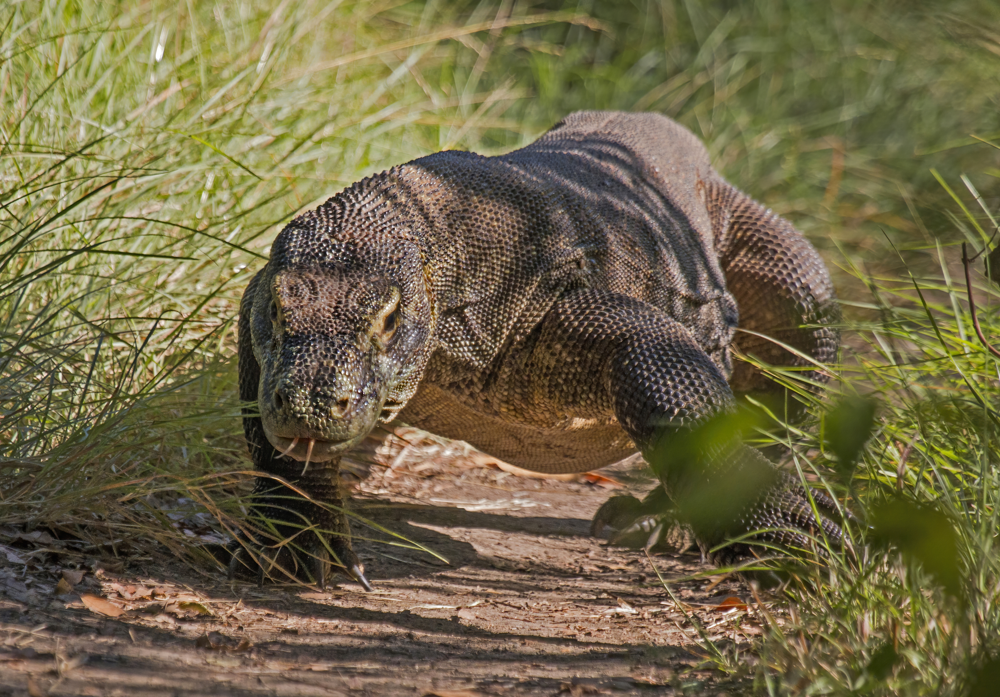
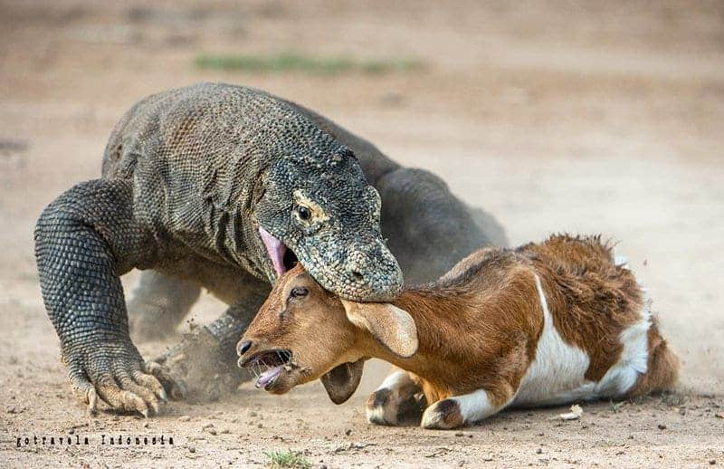
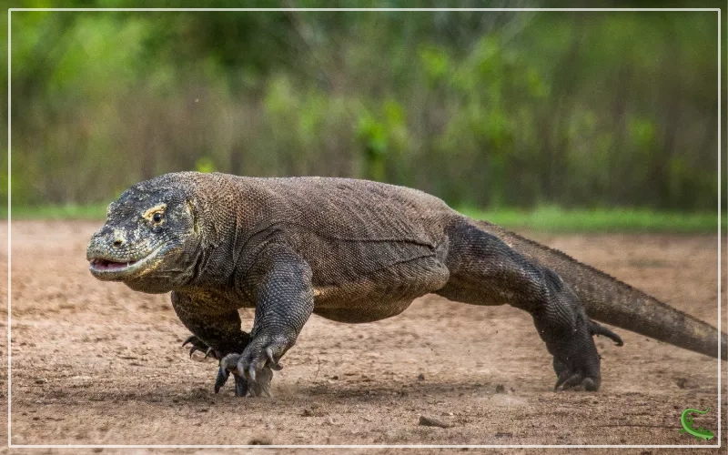
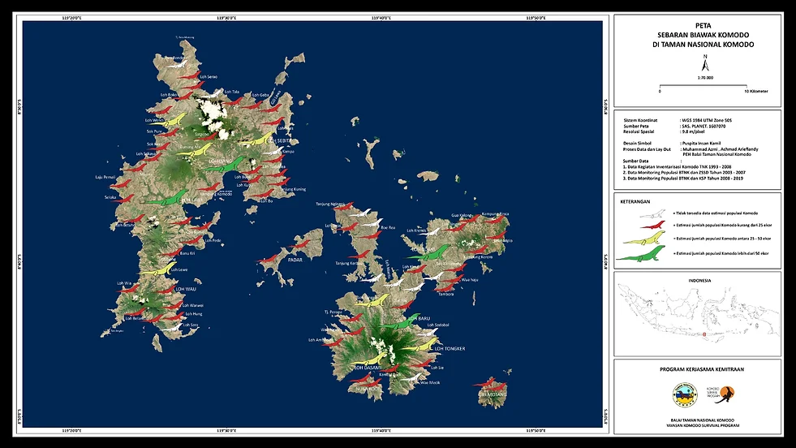

Tentang Komodo
Komodo memiliki nama ilmiah Varanus komodoensis. Hewan ini terkenal karena ukuran tubuh besar dan kekuatan berburu.
Komodo adalah kadal terbesar di dunia yang hanya hidup di Indonesia.
Pelajari Sekarang
Komodo memiliki nama ilmiah Varanus komodoensis. Hewan ini terkenal karena ukuran tubuh besar dan kekuatan berburu.

Kadal Terbesar dan Terberat: Komodo dapat mencapai panjang lebih dari 3 meter dan berat hingga 150 kg.
Air Liur Berbisa: Air liur komodo mengandung racun yang menyebabkan syok pada mangsa.
Indra Penciuman Tajam: Komodo bisa mencium bau bangkai dari jarak 5 hingga 11 kilometer.
Habitat Terbatas: Hanya ditemukan di lima pulau Indonesia.
Reproduksi Aseksual: Betina dapat berkembang biak tanpa pejantan.
Pemakan Bangkai: Karnivora puncak yang memakan rusa, babi hutan, hingga kerbau.
Perenang Handal: Bisa berenang dan berpindah antar pulau.
Keturunan Purba: Disebut naga terakhir dari zaman purba.

Komodo hidup di Pulau Komodo, Rinca, Flores, Padar, dan wilayah savana tropis Indonesia.
